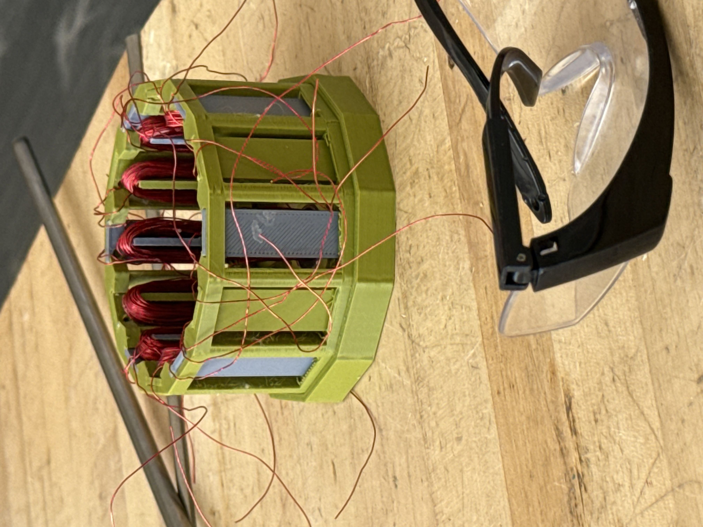
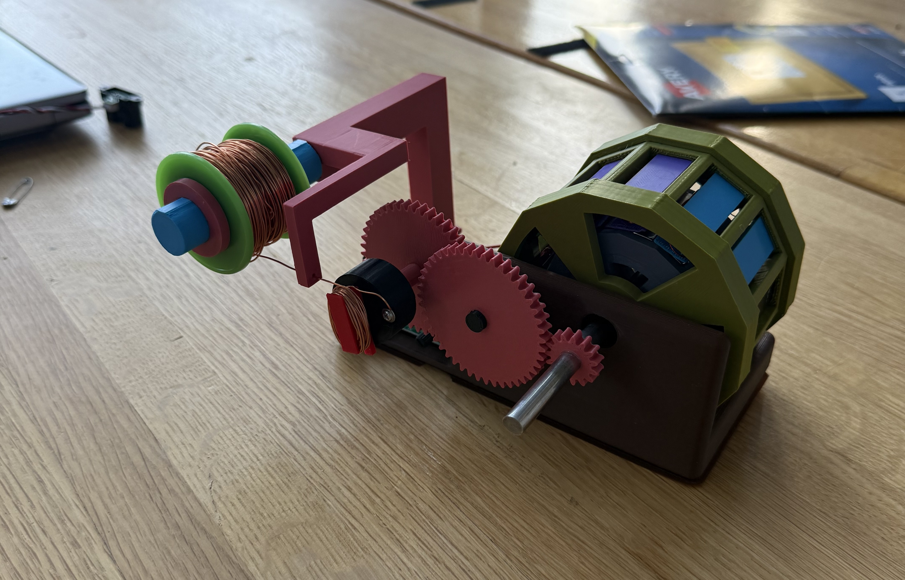

This video shows the brushed motor in operation. The design went through several iterations to optimize torque, efficiency, and manufacturability. I handled the electromagnetic design, mechanical layout, and prototyping of the motor from concept through to a working unit.

First test run of the motor after winding. This clip captures the initial spin-up and behavior under load. The winding pattern and commutation were tuned to reduce cogging and improve smooth operation.
Second test run showing improved performance after adjustments. The motor runs at a steadier speed and handles load changes more predictably. These tests informed the final design choices for the production version.
Custom coil winder built for this project to produce consistent windings with the right tension and lay pattern. It allowed rapid iteration on turn count and wire gauge while keeping quality repeatable. The setup was essential for prototyping multiple motor variants efficiently.
